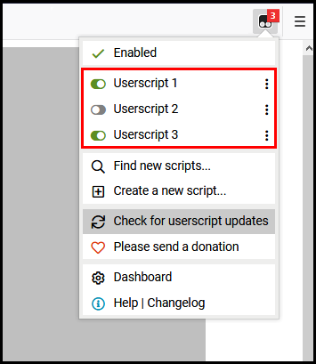

Tamper Monkey Script Install Page
By: Phillip Shockley [shocklp]


Contents
|
TamperMonkey "allows you to customize the way a web page displays or behaves, by using small bits of JavaScript." It is a Firefox extension that enables people to change web pages that they don't control.
Like anything else you load on your system, TamperMonkey can be used against you. Don't load scripts onto your system unless you trust the source.
WARNING:
|
How do I get the Scripts? (and what do they do?)

|
Note: Before installing any of these scripts, it is highly reccomended that you know how to use all of the problem solve apps in their unmodded state, should anything ever happen that stops these scripts from running properly. |
In the following table(s) you'll find the scripts that you can install to enhance your experience with brief descriptions of what each one does.
First you'll need to install TamperMonkey (the addon that allows the scripts to do their thing).
After you've installed TamperMonkey, you can choose the scripts you'd like to add and click the install button next to them.
Step 1: Install TamperMonkey
Step 2: Pick your add-ons
What if I run into problems?
Again, these scripts are not officially supported by Amazon. The best you can do is check for updates, and if the problem isn't already fixed, reach out to shocklp.
|
To disable individual scripts, click the TamperMonkey logo and uncheck each script you wish to disable.  |
To disable TamperMonkey entirely, you can click the TamperMonkey logo in the top right of your browser and select enable/disable. |
|
Check for Updates
To check for updates to the scripts you have installed, click on the Tamper Monkey logo |